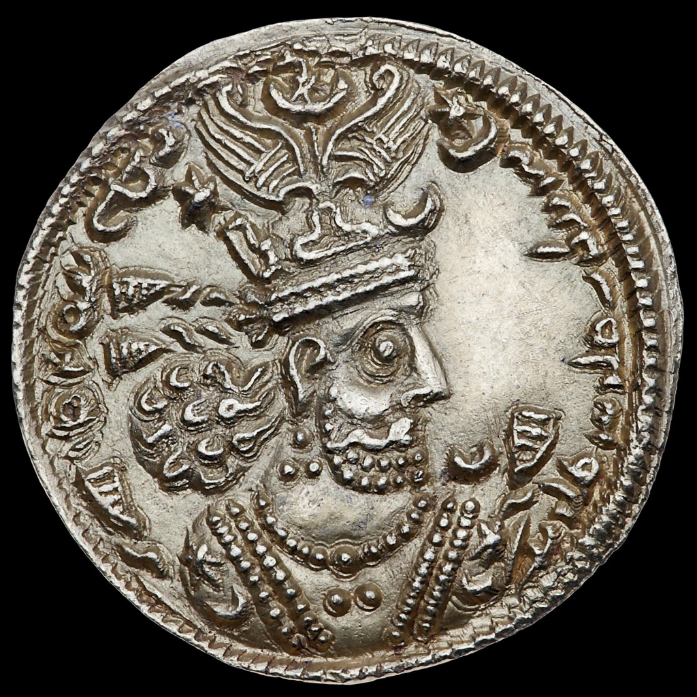

Khosrow I

Khosrow I (Middle Persian: 𐭧𐭥𐭮𐭫𐭥𐭣𐭩), traditionally known by his epithet Anushirvan ("the immortal soul"), was the Sasanian King of Kings of Iran from 531 to 579. He was the son and successor of Kavad I. His reign is traditionally regarded as the high point of the Sasanian Empire, marked by military victories, administrative reform and a flourishing of learning.
Reforms
Khosrow reformed the tax system, replacing arbitrary levies with a fixed land tax based on surveyed measurements, and reorganised the army: the single commander-in-chief was replaced by four regional generals (spahbeds), and a new class of landed gentry, the dehqans, was equipped as cavalry at state expense. He also curbed the power of the great noble families and the Zoroastrian priesthood after suppressing the Mazdakite movement, which his father had tolerated.
Wars
In 532 Khosrow concluded the "Eternal Peace" with the Byzantine emperor Justinian I, but war resumed in 540: he invaded Syria and sacked Antioch, deporting its population to a new city near Ctesiphon. Further wars followed over Lazica on the Black Sea, settled by the Fifty-Year Peace of 562. In the east he destroyed the Hephthalite Empire in alliance with the Western Turks (c. 557–561), and in 572–578 he intervened in Yemen against the Aksumites and fought a final war with Byzantium.
Culture
Khosrow's court at Ctesiphon welcomed scholars from across the world, including Greek philosophers after Justinian closed the Academy of Athens in 529, and Indian learning: chess reached Persia from India during his reign, and the physician Borzuya translated the Panchatantra fables. The great vaulted hall of Taq Kasra is attributed to his reign. In Persian tradition he stands as the model of the just king, and many later works of advice literature were ascribed to him.
See also: Sasanian Empire, Justinian I, Ctesiphon.